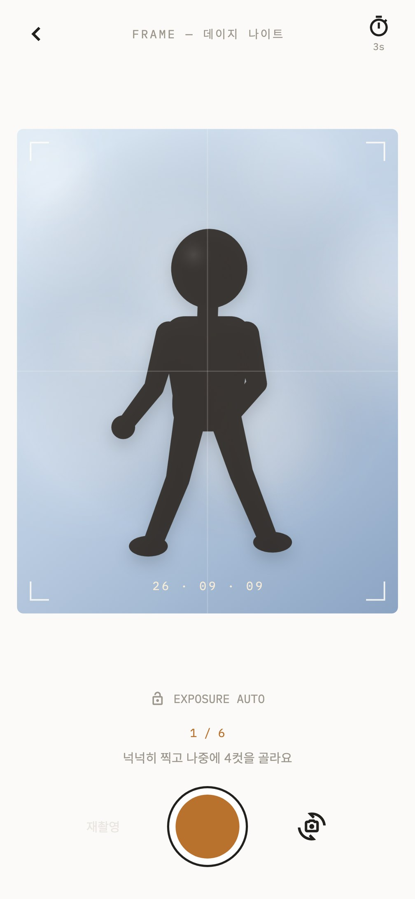
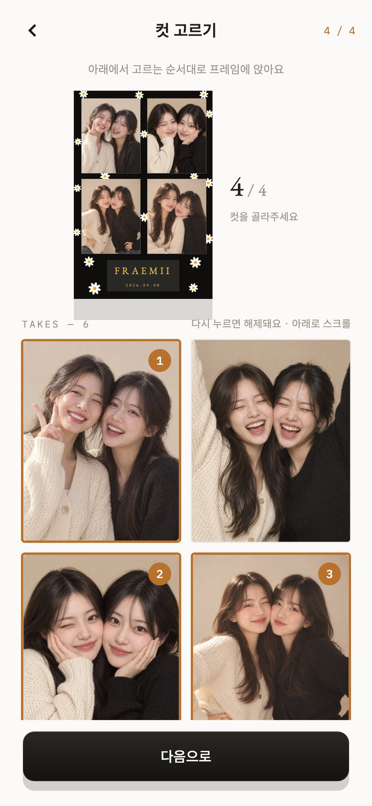
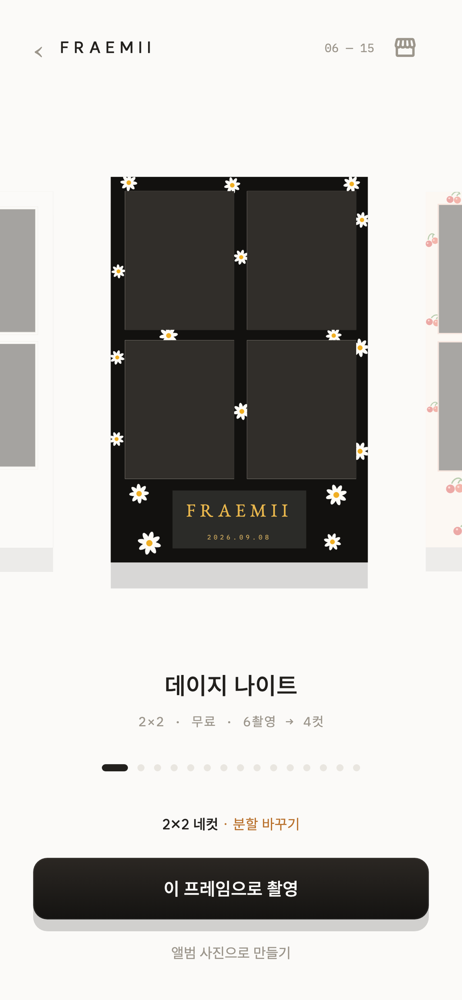
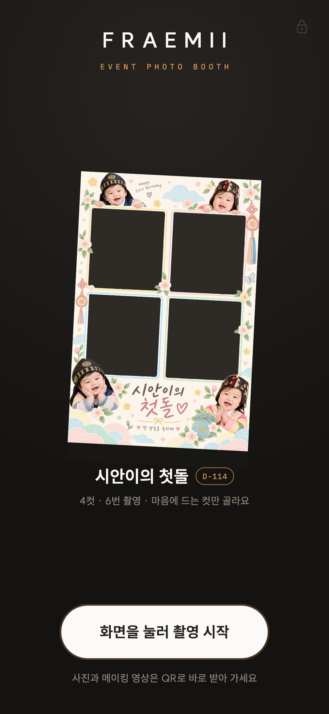
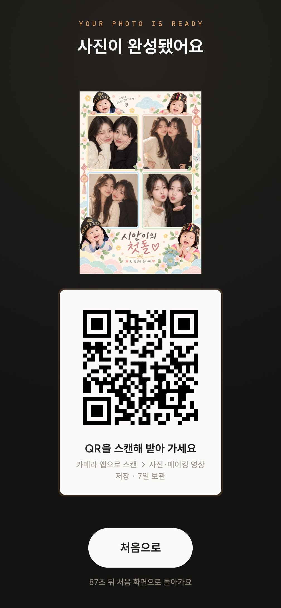

프레임을 고르고, 포토부스처럼 리듬에 맞춰 찍고, 마음에 드는 컷만 골라 완성하는 네컷 앱이에요. 회원가입 없이 열자마자 바로 찍을 수 있어요.Pick a frame, shoot to the rhythm of a real photo booth, and keep only the shots you love. No sign-up needed. Just open the app and shoot.
iOS · Android무료Free회원가입 없음No sign-up한국어 · EnglishKorean · English


35+
기본 프레임, 앱 업데이트 없이 계속 늘어나요Built-in frames, with more added without an app update
3분할layouts
4×1 스트립 · 2×2 네컷 · 6컷 그리드Strip · 2×2 · 6-cut grid
+2장takes
여유 있게 찍고 마음에 드는 컷만 골라요Extra takes, so you keep only the best
0원Free
무료 · 회원가입 없이 바로 시작해요No sign-up, no account
Signature
포토부스에서 찍는 것처럼Just like a real photo booth
셔터를 한 번 누르면 카운트다운, 찰칵, 다음 포즈. 포즈를 바꾸는 그 짧은 틈까지 진짜 부스 같아요. 여유 있게 찍고, 마음에 드는 컷만 고르세요.One tap: countdown, click, next pose. Even the beat between poses feels like a real booth. Shoot a few extra and keep the ones you love.
6장 찍고 4장만 고르세요. 고른 순서 그대로 프레임에 들어가요.Shoot six, keep four. The order you tap them in is the order they appear in the frame.
눈 감은 컷, 흔들린 컷은 빼면 돼요. 컷마다 포즈 안내가 뜨고, 촬영 중에는 노출을 고정해 컷마다 색이 달라지는 일이 없어요.Blinked? Blurry? Just skip that one. Every take comes with a pose prompt, and exposure is locked for the whole sequence so your shots never come out in mismatched colors.
01카운트다운 3·5·10초 — 끄고 한 컷씩 직접 찍을 수도 있어요3, 5 or 10-second countdown, or turn it off and shoot one at a time
02촬영 중 카메라 전환 — 컷 사이에 전면·후면 카메라를 바꿔도 돼요Switch cameras mid-sequence, front or back, between shots
03메이킹 영상 — 셔터 직전 몇 초가 프레임 안에서 살아 움직여요Making-of video: the seconds before each shutter, brought to life inside your frame
04앨범 사진으로도 — 이미 찍어 둔 사진을 프레임에 담을 수 있어요From your library too: put photos you've already taken straight into a frame
REAL실제 촬영·컷 고르기 화면Actual shoot and pick screens
Screens
고르고, 찍고, 담기까지. 실제 화면으로 미리 보기Pick, shoot, keep, screen by screen
옆으로 넘기며 둘러보세요. 모두 앱에서 그대로 캡처한 화면이에요.Swipe through. Every screen here is captured straight from the app.
01분할 고르기Pick a layout

02디자인 무대Choose a design03리듬 촬영Shoot to the booth rhythm04컷 고르기Choose your shots
그 장소에 가야 열리는 프레임Frames that unlock only when you're there
경복궁, 경주 동궁과월지, 안동 하회마을. 명소마다 그곳만의 프레임 세트가 있어요. 근처에 가면 GET 버튼이 열리고, 한 번 받으면 어디서든 계속 쓸 수 있어요. 여행 도장을 모으듯이.Gyeongbokgung Palace, Donggung Palace and Wolji Pond, Hahoe Village. Every landmark has its own set of frames. Get within range and the GET button unlocks. Once it's yours, you can use it anywhere, forever. Like collecting travel stamps.
GPS위치 정보는 폰 안에서만 — 서버로 보내지 않아요Your location stays on your phone and is never sent to a server
SET스트립·네컷·6컷 세트를 한 번에 받아요Get the strip, 2×2 and 6-cut frames as one set
MINE받은 프레임은 나의 명소 프레임에 모여 언제든 꺼내 쓸 수 있어요Everything you've collected lives in My Landmark Frames, ready whenever you are
Features
프레임은 데이터라서, 계속 늘어나요Frames are data, so the collection keeps growing
01
촬영Shooting
포토부스처럼, 폰으로Like a booth, on your phone
카운트다운 연속 촬영Countdown sequence
3·5·10초 중 고르거나 끄기. 셔터 한 번에 컷 수만큼 자동으로 찍고, 컷마다 포즈를 안내해요.3, 5 or 10 seconds, or off. One tap shoots the whole sequence, with a pose prompt for every shot.
노출 잠금Exposure lock
첫 셔터에 노출을 고정해 컷마다 색이 달라지지 않게 해요. 네컷은 컷끼리 톤이 맞아야 예쁘니까요.Exposure locks on the first shutter so every shot matches. In a photo strip, consistency matters more than resolution.
메이킹 영상Making-of video
셔터 직전 4초가 완성된 프레임 안에서 컷마다 살아 움직여요. 공유할 때 함께 보내져요.The four seconds before each shutter come alive inside the finished frame, and get shared along with the photo.
누끼 · 배경색 · 필터Cut-out · background · filters
인물만 남기고 배경색을 고르거나 원본 그대로 두세요. 웜·필름·모노·쿨 필터는 모든 컷에 한 번에 적용돼요.Cut out the person and pick a backdrop, or keep the original. Warm, film, mono and cool filters apply to every shot at once.
앨범 사진으로 만들기Make one from your library
이미 찍어 둔 사진을 골라 프레임에 담아요. 카메라 없이 고르고, 편집하고, 저장까지.Put photos you've already taken straight into a frame. No camera needed.
보관함 7일7-day vault
완성본은 자동으로 보관되고 7일 뒤 정리돼요. 오래 남길 사진은 사진 앱에 고화질로 저장하세요.Finished strips are kept for 7 days, then cleared out. Save the keepers to your photo library in high resolution.
02
프레임Frames
기본 35종 + 행사 + 명소35 built-in, plus event and landmark frames
3가지 분할, 35종 디자인3 layouts, 35 designs
스트립·네컷·6컷 그리드. 데이지, 체리, 리본, 필름, 마리골드까지 미니멀한 것부터 화려한 것까지.Strip, 2×2 and 6-cut. Daisy, cherry, ribbon, film, marigold and more, from minimal to playful.
행사 프레임 · 기간 한정Event frames · limited time
행사 코드를 넣으면 그 행사만의 프레임이 내려와요. D-day가 표시되고, 기간이 끝나면 프레임은 사라져도 찍은 사진은 남아요.Enter an event code and that event's frames download to your phone. A D-day badge shows how long is left. When it ends the frame disappears, but your photos stay.
지역 명소 프레임Landmark frames
그 장소 근처에서만 받을 수 있어요. 한 번 받으면 계속 내 것. 여행 도장처럼 모아 보세요.Available only when you're near the landmark. Once it's yours, it's yours for good. Collect them like travel stamps.
앱 업데이트 없이 새 프레임New frames, no app update
프레임은 코드가 아니라 데이터예요. 새 디자인은 앱을 열 때 조용히 내려와요.Frames are data, not code. New designs arrive quietly whenever you open the app.
03
나눔Sharing
그 자리에서, 연락처 없이On the spot, no contact details needed
고화질 저장High-res save
사진 앱의 FRAEMII 앨범에 2~3배 해상도로 저장돼요. 4×6으로 인화해도 선명해요.Saved to a FRAEMII album at 2–3× resolution, crisp enough for a 4×6 print.
공유 시트Share sheet
사진과 메이킹 영상을 한 번에. 메신저, SNS 어디로든 보낼 수 있어요.Send the photo and making-of video together to any app on your phone.
QR로 전달Pass it on with a QR code
같이 찍은 친구가 QR을 스캔하면 바로 자기 폰에 저장돼요. 연락처를 몰라도, 앱이 없어도 괜찮아요. 7일 뒤 자동 삭제.Friends scan the QR code and the photo lands on their phone. No contact details, no app needed. Deleted automatically after 7 days.
For events & venues
행사장 전체가 포토부스가 됩니다Turn the whole venue into a photo booth
돌잔치·결혼식에는 태블릿 한 대로 운영하는 부스 모드를, 페스티벌·팝업에는 QR 하나로 모든 손님의 폰에 내려가는 행사 프레임을. 실물 부스도, 대기 줄도, 운영 인력도 필요 없어요.Booth mode runs on a single tablet for first birthdays and weddings. For festivals and pop-ups, event frames reach every guest's phone from a single QR code. No physical booth, no queue, no staff.
돌잔치First birthdays결혼식Weddings페스티벌Festivals콘서트 · 팬미팅Concerts · fan meetings팝업 스토어Pop-up stores러닝 · 스포츠 행사Runs · sports events


Moments
이런 순간에 꺼내 보세요Made for moments like these
포토부스는 찾아가야 하지만, 폰은 이미 손에 있으니까요.A photo booth is somewhere else. Your phone is already in your hand.
카페에서 친구와 "네컷 찍자""Let's take a photo strip" at the café여행지에서 명소 프레임 모으기Collecting landmark frames on a trip연인과의 기념일Anniversaries축제 · 콘서트 현장에서At the festival or concert돌잔치에 온 손님들과With guests at a first birthday혼자서도 필름 카메라 감성으로Solo shots with a film-camera feel